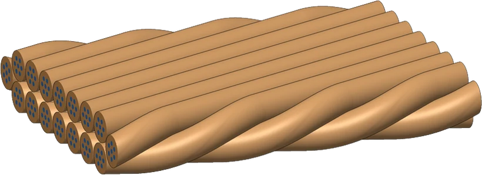
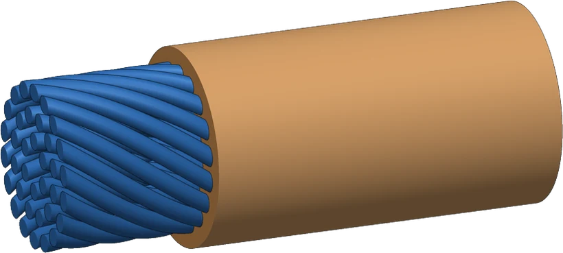

From Magnet to Filament
Superconducting magnets span many scales at once. Zoom in to see what is inside, and how each scale is modelled.
Magnet
Huge energy, tiny details
Superconducting magnets bend and focus particle beams. The dipoles in one of the LHC's eight sectors store about 1.1 GJ, the energy of some 260 kg of TNT, so a sudden loss of superconductivity, a quench, must not dissipate in a single hot spot.
Protecting a magnet requires simulating it, and its behaviour depends on structures far smaller than the magnet itself.
One aperture of an LHC dipole, coloured by its magnetic field at nominal current (up to 8.7 T).
Cable · homogenized
To the magnet, a cable is one block
A magnet has too many turns to resolve every strand. The DISCC model replaces each cable with an equivalent material that still captures the currents flowing between its strands.
It can be included in magneto-thermal models of the whole magnet, where the losses it predicts heat up the coil.

Cable · resolved
Inside: twisted strands
A Rutherford cable is a flat braid of twisted strands. The CATI method couples the strands in a 2D cross-section. Colours show the current in each strand.
This detailed solution is used to build and check the homogenized cable model.
Illustrative 36-strand Nb₃Sn cable during the same fast discharge: the transport current decays while coupling currents loop between the strands.
Strand · homogenized
To the cable, a strand is one block too
The ROHM and ROHF models summarize a whole strand with a small chain of cells, which reproduce its rate-dependent and hysteretic losses.
Inspired by the energy-based hysteresis model for ferromagnetic materials, the cells are identified on CATI solutions and cover a wide range of excitations.

Strand · resolved
Inside: twisted filaments
Each strand holds many superconducting filaments in a conducting matrix, twisted along its length. CATI turns this 3D twisted conductor into coupled 2D problems.
Filaments screen the changing field, while coupling currents, limited by the twist, loop through the matrix. Both dissipate energy.
Simplified 54-filament Nb₃Sn strand for future magnets, not the strand used in the LHC. The animation is an illustrative fast discharge, the kind of transient that quench protection must handle.
Filament
Where the loss begins
As the field falls, a front of reversed current (blue against red) sweeps through the filament. Each small triangle is one finite element of the model.
This sharply nonlinear behaviour causes macroscopic hysteresis, and makes the equations hard to solve.
Reduce, then homogenize
The small scales cannot be ignored, but resolving them all in 3D is too expensive. The approach is a complete homogenization sequence from filament to magnet: at each scale, reduced-order models identified on detailed simulations provide an equivalent material for the scale above.
The work on this homogenization sequence was conducted at CERN in collaboration with Dr. Mariusz Wozniak, in the TE-MPE group, and was supported by the High Field Magnets (HFM) programme.
The development of this application was assisted by Claude Opus 5.5, outputs and results were carefully checked but errors may remain. Please contact me if you find any, or if you have any question or suggestion for improvement. Thank you!